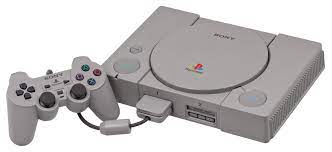
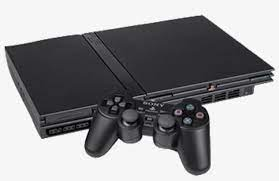
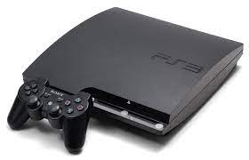
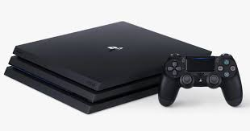
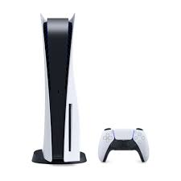

Historia do mundo dos gamese
PLAYSTATION
Tudo começou lá atrás, em 1995, com o lançamento do primeiro PlayStation, ou PSOne. O console tinha design elegante e seus jogos rodavam por meio de CDs, o que permitia processamento em 3D e som melhorado. O PSOne vendeu, em uma década, mais de 100 milhões de unidades no mundo. O PlayStation Controller, de 1994, ganhou quatro botões nos ombros (ao invés de apenas dois) e deu mais possibilidades de gameplay aos jogadores. O acessório foi sucedido pelo Dual Analog Controller, em 1997, e depois pelo original DualShock, também em 97.
CONSOLES DO PLAYSTATION E SUAS HISTORIAS
O Playstation 1 lançou dia 3 de dezembro de 1994 (1/12/1994).O console tinha design elegante e seus jogos rodavam por meio de CDs, o que permitia processamento em 3D e som melhorado. O PSOne vendeu, em uma década, mais de 100 milhões de unidades no mundo. O PlayStation Controller, de 1994, ganhou quatro botões nos ombros (ao invés de apenas dois) e deu mais possibilidades de gameplay aos jogadores. O acessório foi sucedido pelo Dual Analog Controller, em 1997, e depois pelo original DualShock, também em 97.
O Playstation 2 lançou dia 4 de março de 2000 (4/03/2000)
O Playstation 3 lançou dia 11 de novembro de 2006 (11/11/2006)
O Playstation 4 lançou dia 15 de novembro de 2013 (15/11/2013)
O Playstation 5 lançou dia 19 de novembro de 2021 (19/11/2021)
Clique aqui para saber 10 curiosidades sobre a empresa playstation
XBOX